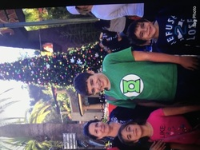
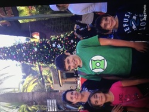

Portfolio



Hello, my name is Fabian Munoz and I am currently attending the University of California, Riverside. I am a first year and am very excited to start year two of my college experience. I attended St. John Bosco High School for four years and participated in the school marching band. I played the sousaphone or tuba for all four years. I also have a history with the trumpet and the violin.
Some of my hobbies are playing video games, skateboarding, lifting, and playing music. I do not play music anymore but I still very much enjoy it. Some of my favorite video game series is Assasin's Creed, Elder Scrolls, and Call of Duty. I like lifting on my own time and I am a novie at skateboarding even though I have been skateboarding for a bit.
I want to go to law school in Colorado after I gradutate U.C.R and become an entertainment lawyer. I have a passion for music and want to implement it into the career I want in the future. My dream is to be the lawyer of a big time artist like Kendrick Lamar or J. Cole.
• Volunteered at city events
• Ran meetings and platoon of about ten students
• Experience with police codes
• Responsible for teaching other schools about St. John Bosco High School
• A role model for other students
• Learned drill and marching
• Played the sousaphone
• Only sousaphone player in the band